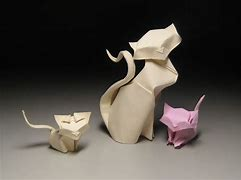
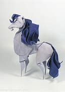

Origami Designs
About Us
Follow Us

Intresting Facts About Cats
- Cats can rotate their ears 180 degrees.
- The hearing of the average cat is at least five times keener than that of a human adult.
- In the largest cat breed, the average male weighs approximately 20 pounds.
- Domestic cats spend about 70 percent of the day sleeping. And 15 percent of the day grooming
- Most cats have no eyelashes.

Intresting Facts About Horses
- The tallest horse ever measured 21.25 hh (2.20m).
- The oldest horse ever was 62 years old.
- The average horse lifespan is 25 - 30 years.
- Horses have 205 bones
- Horses were first domesticated around 5000 years agox.